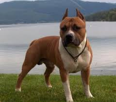
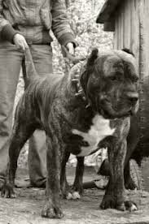
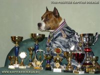

Про Стафов
Собаки этой породы активны и смелы, обладают целеустремленностью и своеобразным интеллектом. Их характер сочетает ряд противоположных качеств: ласку и силу, непримиримость и благодушие, упорство и чувствительность. Эта порода вряд ли подойдет человеку, который впервые заводит собаку. Стаффы бесстрашны, но стремятся к собственной безопасности. Если амстафф решит, что к нему несправедливы, он всем своим видом покажет обиду. Отлично живёт в городской квартире, получая достаточно умственных и физических нагрузок при выгуле. Абсолютно не подходят для цепи. Порода свободно поддается дрессировке. При правильном отношении к воспитанию и дрессировке агрессия к людям для данной породы недопустима. Запрещено собаку оставлять без присмотра взрослых с детьми. Собака имеет низкий порог раздражительности. Необходима ранняя социализация и последовательное воспитание. Зачастую собака становится агрессивной, если чувствует какую-либо опасность. Настороженно относится к посторонним людям. Беря стаффа, владельцы должны быть готовы не только заниматься дрессировкой, но и уделять особое внимание физическим нагрузкам.
  